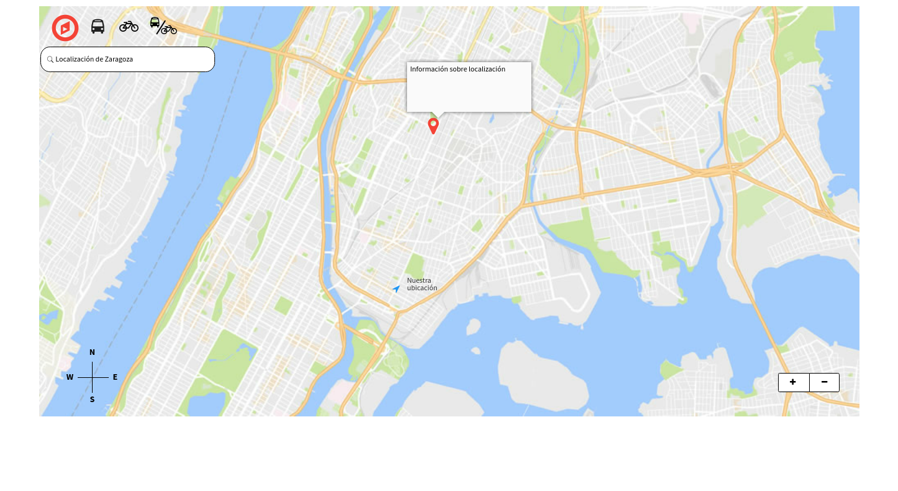
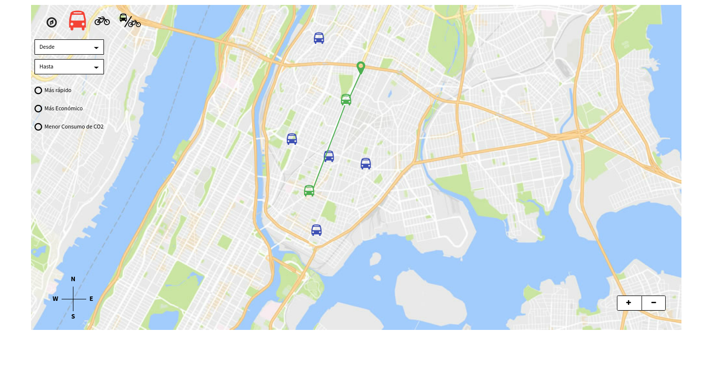
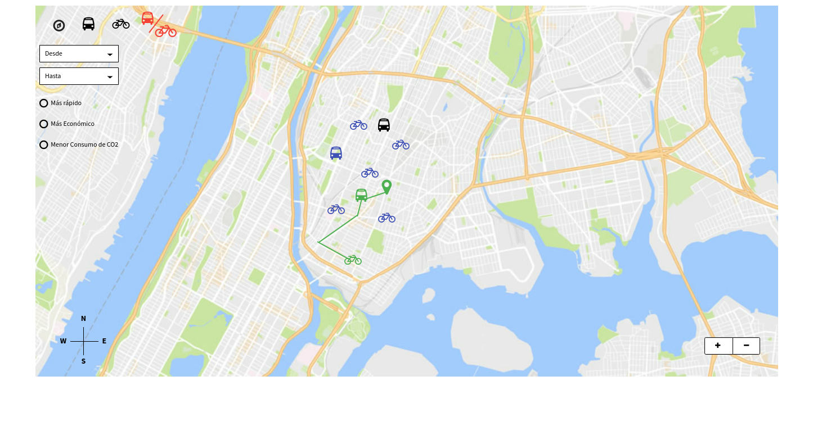
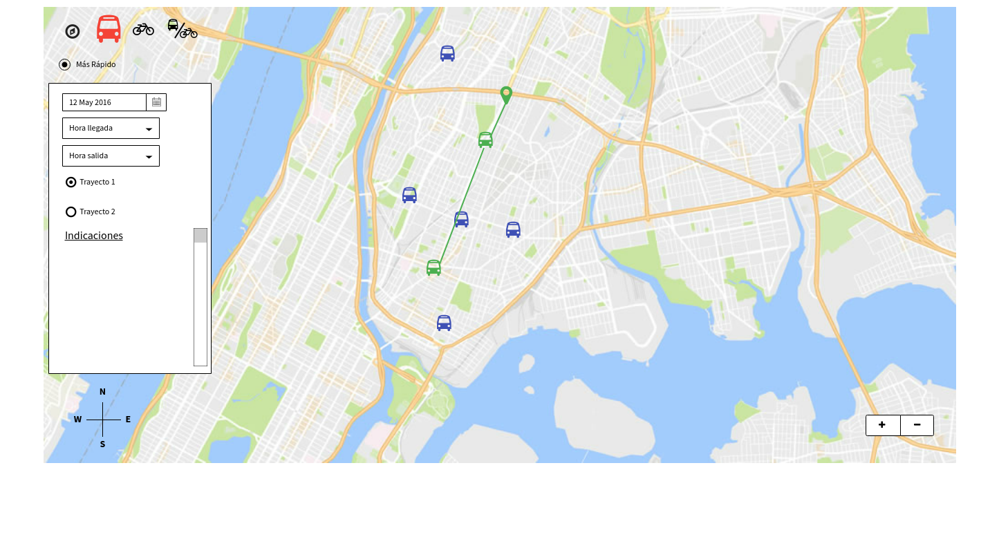

Requisitos de la aplicación:
- Mostrar en un mismo mapa las paradas de los autobuses y de las estaciones de bicicletas de alquiler.
- Localizar la bicicleta de alquiler más cercana
- Calcular el camino óptimo entre dos puntos en autobús y/o en biclieta
- Calcular el camino más económico entre dos puntos en autobús y/o en bicicleta
- Calcular el camino con menor consumo de CO2 entre dos puntos en autobús y/o en bicicleta



